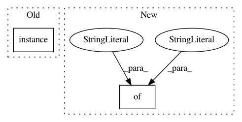

1305be0d02296ddbf12a67b9ba4b542587e285de,nilmtk/disaggregate/combinatorial_optimisation.py,CombinatorialOptimisation,disaggregate,#CombinatorialOptimisation#Any#Any#,62
Before Change
// Mains meter:
elec_meters = {
mains.instance(): {
"device_model": "mains",
"site_meter": True,
"data_location": mains_data_location,
After Change
appliances.append(appliance)
else:
for app in meter.appliances:
appliance = {
"meters": app.metadata["meters"],
"type": app.identifier.type,
"instance": app.identifier.instance
// TODO this `instance` will only be correct when the
// model is trained on the same house as it is tested on.
// https://github.com/nilmtk/nilmtk/issues/194
}
appliances.append(appliance)
elec_meters.update({
meter.instance(): {
In pattern: SUPERPATTERN
Frequency: 3
Non-data size: 2
Instances
Project Name: nilmtk/nilmtk
Commit Name: 1305be0d02296ddbf12a67b9ba4b542587e285de
Time: 2014-11-16
Author: jack-list@xlk.org.uk
File Name: nilmtk/disaggregate/combinatorial_optimisation.py
Class Name: CombinatorialOptimisation
Method Name: disaggregate
Project Name: nilmtk/nilmtk
Commit Name: aaf10ddbba8387be41e6c11fd12e8fa0af7e1cf8
Time: 2014-11-05
Author: jack-list@xlk.org.uk
File Name: nilmtk/disaggregate/combinatorial_optimisation.py
Class Name: CombinatorialOptimisation
Method Name: disaggregate
Project Name: nilmtk/nilmtk
Commit Name: aaf10ddbba8387be41e6c11fd12e8fa0af7e1cf8
Time: 2014-11-05
Author: jack-list@xlk.org.uk
File Name: nilmtk/disaggregate/combinatorial_optimisation.py
Class Name: CombinatorialOptimisation
Method Name: train